I led R&D for a fully automated drilling-rig pipe-handling robot in Houston, Texas, taking it from concept through software architecture, real-time motion control, machine vision, high-fidelity simulation, safety systems, and final commissioning on a working rig. The system handled heavy drill pipes autonomously in a harsh, high-stakes environment where reliability and cycle time matter directly. I owned the integration of real-time control, collision-free motion planning, and robust sensing, and I spent significant time offshore making sure the robot performed under real drilling conditions.
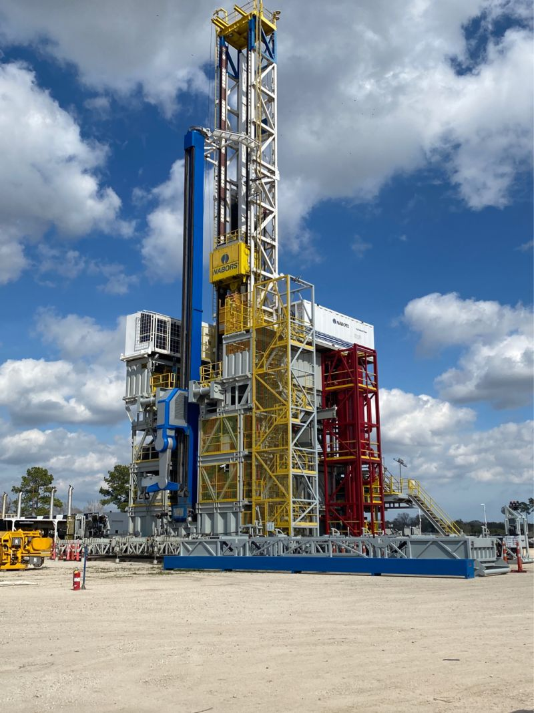
I was responsible for the full R&D cycle of a 7-DOF offshore drilling robot deployed on a rig in Norway. That meant advanced robotic motion control, machine-vision integration, high-fidelity simulation, and final commissioning on an active drilling platform in the North Sea — one of the most demanding industrial environments on Earth. I designed the control and perception pipelines, validated them in simulation, and then traveled to the rig to commission the system and tune it until it was production-ready.
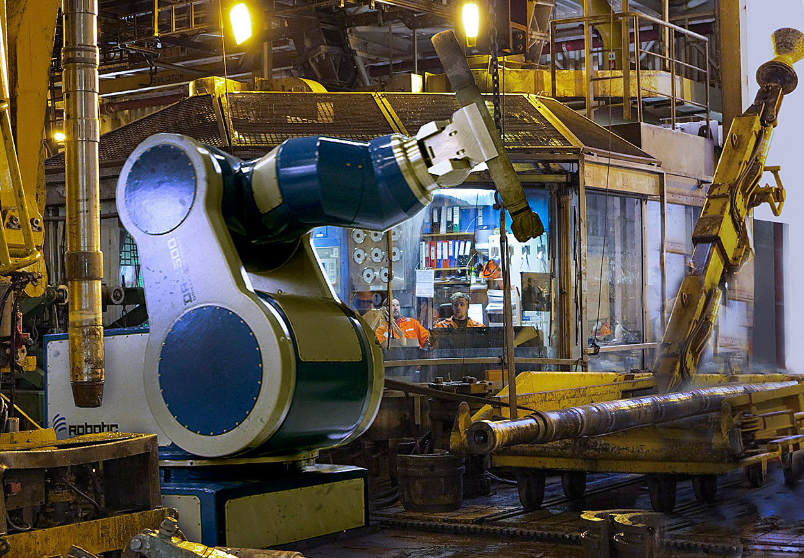
I designed and integrated a real-time machine-vision system for a drilling-rig robotic platform, enabling precise tracking of pipe and tool positions during automated operations. The challenge was not just seeing the pipe — it was closing the loop fast enough that a multi-ton manipulator could react accurately in a dirty, vibrating, high-contrast environment.
The work fused robotics, computer vision, and high-performance motion control into a patented industrial solution. The resulting intellectual property was awarded two United States patents, reflecting both the technical novelty and the commercial value of tightly coupling perception with control in heavy machinery.
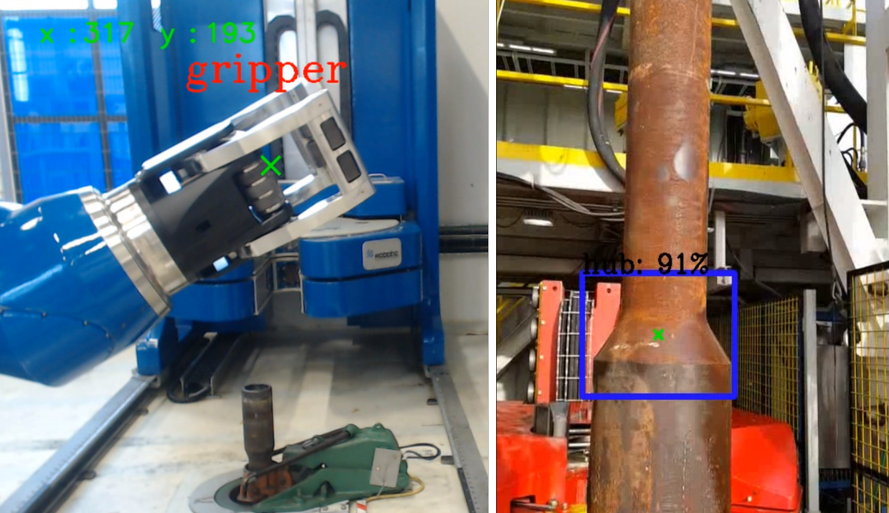
I contributed to the development and validation of the ROS 2 interface for Yaskawa industrial manipulators, building example applications and reference implementations that showed engineers how to run modern motion-planning pipelines on real production hardware. The work bridged open-source robotics middleware with industrial robot controllers, combining real-time communication, manipulation, and practical factory integration. It was a direct contribution to the ROS-Industrial ecosystem, lowering the barrier between research algorithms and shop-floor robots.
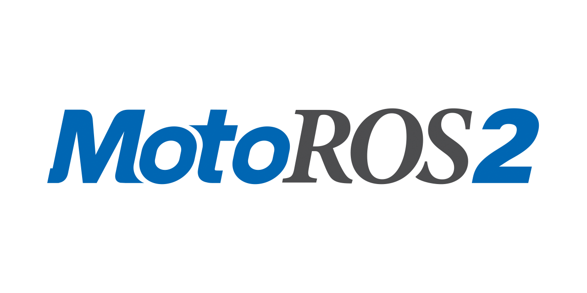
I worked on the development and testing of Yaskawa's next-generation adaptive robot controller platform, which became the MOTOMAN NEXT line. The system introduced an autonomous control unit capable of sensing the work environment, judging the situation, planning motion, and finishing tasks even when workpieces varied or conditions changed. I focused on the control, sensing, and testing layers that let industrial robots move beyond pre-programmed paths toward genuine adaptivity, without sacrificing the speed and repeatability production lines demand.
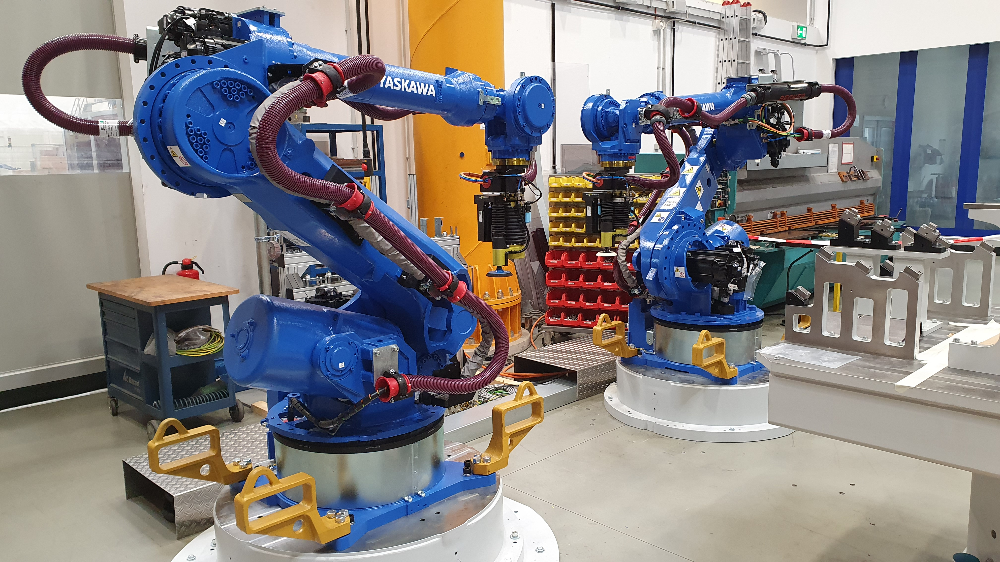
I led motion-control R&D for the IRB5500 paint robot on an elevated rail, one of ABB's flagship high-throughput automotive painting systems. The work required deep integration with ABB RobotWare and RobotStudio, sub-millimeter motion trimming, and extensive stress testing to meet the extreme performance and finish-quality standards of automotive paint lines. I tuned the control laws and motion profiles that let the robot cover large work volumes at high speed while keeping film thickness and trajectory consistency within tight tolerances.
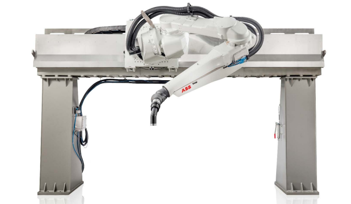
I researched and developed ABB's SafeMove2 safety functionality, focusing on the motion-control layer that guarantees a robot can stop exactly on its planned trajectory within strict time and distance limits. The project balanced high-speed industrial performance with certified human-robot collaboration safety — a rare combination that is central to next-generation flexible factories. My work helped ensure that the robot could be both fast and safe enough to work alongside people without physical guarding.
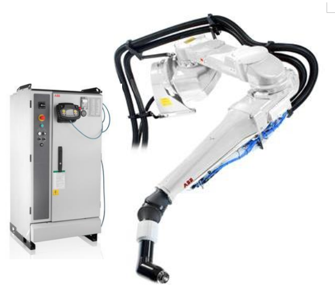
I conducted advanced R&D for the Continuous Motion Rig (CMR), a high-performance drilling system driven by ABB robot controllers and drives. The core challenge was maintaining continuous, synchronized robot motion throughout the entire drilling cycle — because every unnecessary stop costs time and risks damaging expensive equipment.
My responsibilities spanned software architecture, ABB RobotStudio integration, and extensive testing and commissioning. The result was a tightly coordinated multi-robot workflow that pushed both throughput and reliability in one of the most demanding industrial processes in the oil and gas sector.
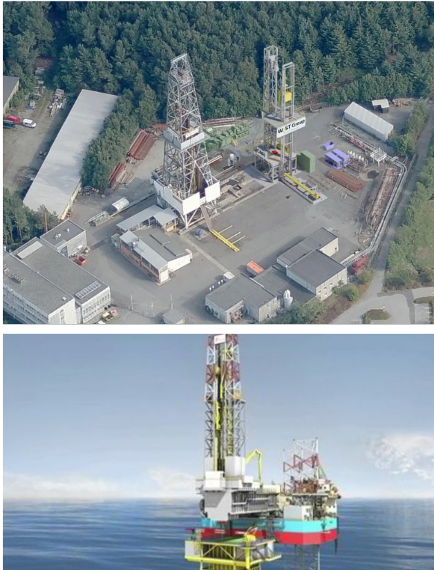
I developed a real-time GPU-based path planner for high-performance robotic picking and manipulation. The system generated collision-free trajectories at frame rate and interfaced directly with industrial robot controllers for smooth, efficient execution. This sits at the intersection of geometric motion planning, GPU acceleration, and industrial robot integration — turning 3D perception data into executable robot motion fast enough to keep up with dynamic bin-picking and assembly tasks.
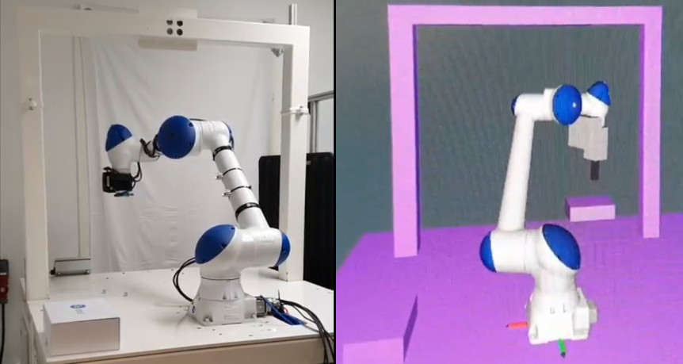
I contributed to the research and development of hybrid electrical propulsion systems for marine vessels, combining conventional engines with modern electric drives. The goal was to cut fuel consumption and emissions while maintaining the operational flexibility ferries and offshore support vessels need. The project drew on my background in marine electrical systems, control, and system integration, and it gave me early exposure to the energy-transition challenges now central to maritime autonomy and robotics.
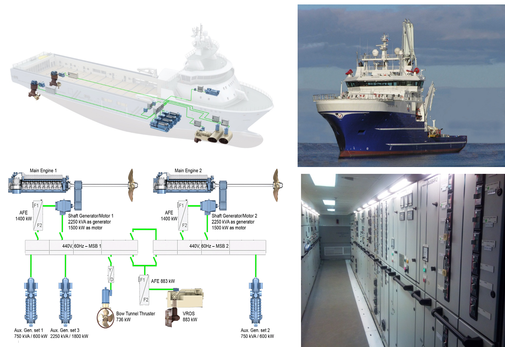
I worked on concept research and development for an advanced electrical-drive system that transfers power from subsea tidal turbines to the onshore grid. The project explored how marine renewable energy could be captured and conditioned reliably in one of the harshest electrical environments on Earth, blending power electronics, marine engineering, and systems thinking. It was an early example of my interest in making complex energy and control systems work where maintenance is difficult and failure is expensive.
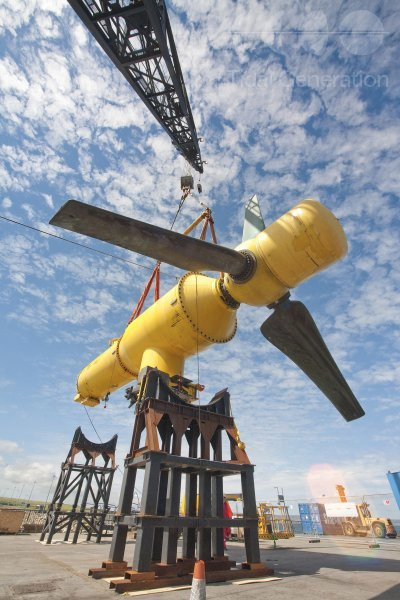
During my years in the ship industry, I contributed to a wide range of marine projects — from new ferry construction and ship conversions to maintenance and upgrade operations. My responsibilities covered electrical power generation, automation and control systems, navigation, and communication technology, often from design through commissioning.
I programmed PLCs and LabVIEW systems, led commissioning and offshore trials, troubleshot complex integrated systems, and optimized performance to meet strict maritime classification and operational standards. This period gave me a deep, practical understanding of how large marine systems are built, tested, and kept running at sea — a mindset I still rely on when designing autonomous systems that must survive far from a service technician.
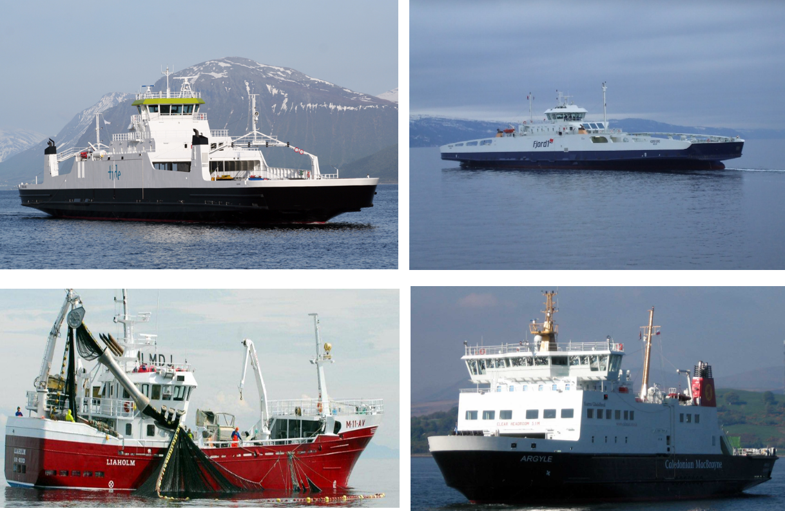
I was part of the team that designed and implemented a new subsea control system using advanced optical communication technology to extend the life of the Tordis-VIGDIS oil fields. My role spanned equipment design, system architecture, offshore commissioning, troubleshooting, and project coordination. The work demanded close collaboration across mechanical, electrical, and software disciplines in a high-reliability subsea environment where failures are measured in millions of dollars and downtime is not an option.
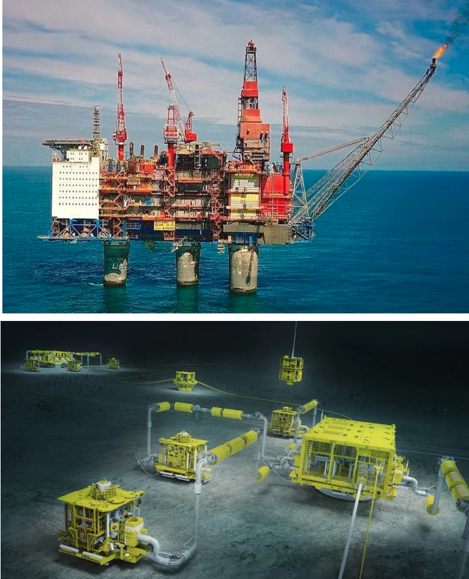
My PhD research developed a novel real-time nonlinear control algorithm for a three-wheeled mobile platform, with a specific focus on energy-efficient motion control. Rather than treating control, mechanics, and electronics separately, I used an integrated mechatronic design approach that co-optimized the hardware and the algorithm around a single energy-performance index.
The methodology combined virtual prototyping, Hardware-in-the-Loop Simulation (HILS), and rapid prototyping on a custom-built robot designed specifically for the research. This closed-loop design-test-refine cycle made it possible to validate theoretical predictions directly on physical hardware and to iterate quickly when the model and reality diverged.
Experimental results showed clear performance gains: the platform consumed less energy while maintaining accurate motion, demonstrating that mechatronic integration and corrective velocity strategies can jointly optimize mobile robot efficiency.
The thesis contributes to energy-aware robotics and mechatronic design, showing how control theory and hardware design can be fused to build mobile platforms that are both capable and efficient. It also established the research pattern I still use today: start from physics, close the loop in software, and prove it on a real machine.
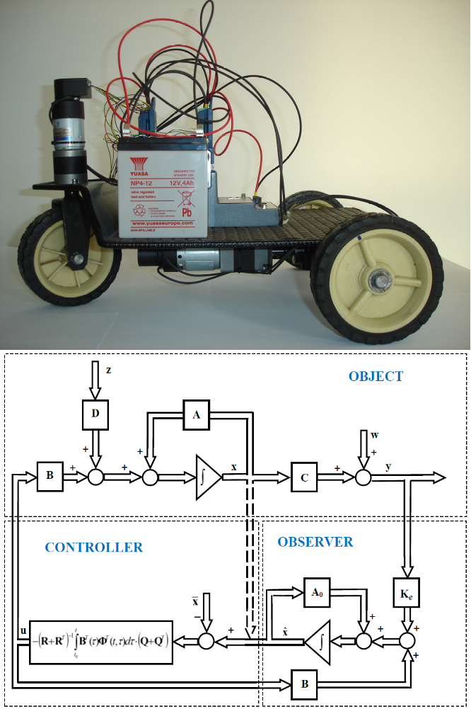